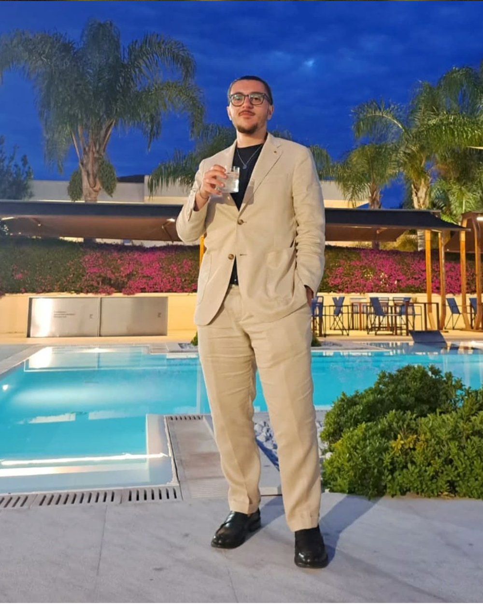

Chi sono

Pensare il concept, progettare la realtà.
Sono Giovanni Ferraioli, un Industrial Product Designer con una vocazione chiara: progettare prodotti fisici che bilancino un'estetica ricercata con la rigorosa fattibilità tecnica.
Il mio percorso nel mondo del design è iniziato con una laurea all'ISIA di Firenze e prosegue oggi con la specialistica alla LABA di Brescia. Negli anni ho sviluppato un metodo progettuale analitico e concreto, validato da riconoscimenti internazionali come la Menzione Speciale al concorso Porada Arredi e due primi posti consecutivi al workshop Creactivity di Pontedera.
Credo fortemente che un buon design non debba limitarsi allo "styling". Deve risolvere problemi reali, migliorare l'ergonomia e ottimizzare i processi produttivi. Per questo, il mio flusso di lavoro affianca sempre i principi dello User-Centered Design (UCD) a quelli del Design for Manufacturing (DFM). Gestisco il progetto in ogni sua fase: dalla ricerca iniziale allo sketching, passando per la modellazione parametrica e di superfici (Rhinoceros, Fusion 360), fino alla prototipazione fisica, lo studio CMF e la stesura delle tavole tecniche e distinte base (BOM).
Che si tratti di ripensare l'ergonomia di un asciugacapelli professionale, ingegnerizzare un ausilio ortopedico o plasmare un arredo in legno massello, il mio approccio rimane invariato: unire la creatività alla cruda realtà della messa in produzione.